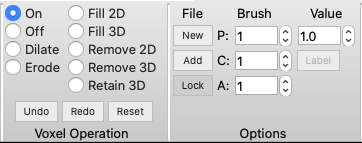

Voxel Editing>

Voxel Operations
This section provides voxel operations for editing the voxels. Tooltips on each of the controls describe their operations.
Options
The options allow creating a new volume file, adding a new map to an existing volume file, setting the brush (number of voxels affected by a mouse click) and the value to which voxels are set.